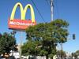

News And Politics
-
Want to eat lunch with the president? Here's how (kind of)
1/17/13, 11:44 a.m.
The presidential inauguration is Monday and officials have just released what's on the lunch menu.
-
Prayer breakfast to mark 50 years since King's 'I Have a Dream' speech
1/16/13, 4:16 p.m.
South Los Angeles leaders will gather at Holman United Methodist Church, where the pastor of L.A.'s First African Methodist Episcopal Church will deliver the keynote.
-
Feds relaunch health care website in preparation for open enrollment
1/16/13, 1:19 p.m.
Open enrollment through the state health insurance marketplaces – which are still being planned – begins on Oct. 1, and coverage through those plans goes into effect on the first day of 2014.
-
Help shape the future of South LA at Community Plan hearing this week
1/14/13, 10:06 a.m.
A city plan that will shape South LA development for the next few decades is heading into its final stages.
-
50th anniversary of MLK's 'Dream' speech celebrated in South L.A.
1/10/13, 1:53 p.m.
On MLK's birthday weekend, a South L.A. museum celebrates the 50th anniversary of his "I Have A Dream Speech."
-
The remarkable comeback of South LA's Charles Drew University
1/9/13, 10:02 a.m.
After years of tumult, Charles Drew University is repositioning itself to occupy a unique, mission-driven place in the South Los Angeles health landscape.
-
Report: Recess is crucial for kids' mental, social skills
1/4/13, 4 p.m.
In addition to the physical exercise, a new report says recess helps cognitive development -- but it's still being reduced in many schools.
-
Feds say Calif. on track to operate its own health insurance marketplace
1/3/13, 11:30 a.m.
States have to be ready to operate their own affordable health insurance exchanges by October – otherwise the federal government will step in and do it for them.
-
South LA police wary of guns, raves, drunk driving on NYE
12/31/12, 11:41 a.m.
The LAPD has spent recent weeks reminding trigger-happy celebrants that firing a gun into the air to ring in 2013 (or any year) is a felony and can be deadly.
-
In honor of 2012, our top 12 South LA stories of the year
12/21/12, 3:53 p.m.
OnCentral looks back and highlights some of its most popular, interesting and important stories from the year the world was supposed to end.
About Us
OnCentral is a site for the neighborhoods around Central Avenue. It's a news site where we not only provide information, but put the power of storytelling in your hands. Sign up and you can share your story or help an existing story grow by adding in your perspective or corrections.
Follow OnCentral


- Most Viewed
- Most Commented